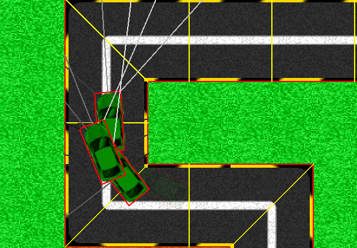

Cet onglet vous permet de régler les paramètres principaux du logiciel.
Ce bouton permet de changer le langage du logiciel. Faites votre choix parmi la liste de langues disponibles et l'interface sera mise à jour automatiquement.
Lorsque ce paramètre est activé, les voitures éliminées durant une génération disparaîssent lentement en suivant un effet de fondu. Dans le cas inverse, elles restent sur place, immobiles.
Lorsque ce paramètre est activé, les onglets Évolution et Expériences affichent les lignes utiles au bon fonctionnement du logiciel :

L'onglet évolution avec le tracé activé.
Lorsque ce paramètre est activé, une voix annonce le titre du logiciel au lancement de celui-ci.
Lorsque ce paramètre est activé, une musique est jouée pendant l'utilisation du logiciel.
Elle affiche tous vos circuits, ou bien tous vos individus, en fonction de votre sélection. Vous pouvez passer de l'un à l'autre à l'aide des boutons en haut de la liste. Après avoir sélectionné un élément de la liste, vous pouvez le renommer ou le supprimer à l'aide des boutons au bas de celle-ci. Notez que vous ne pouvez ni renommer ni supprimer le circuit par défaut.